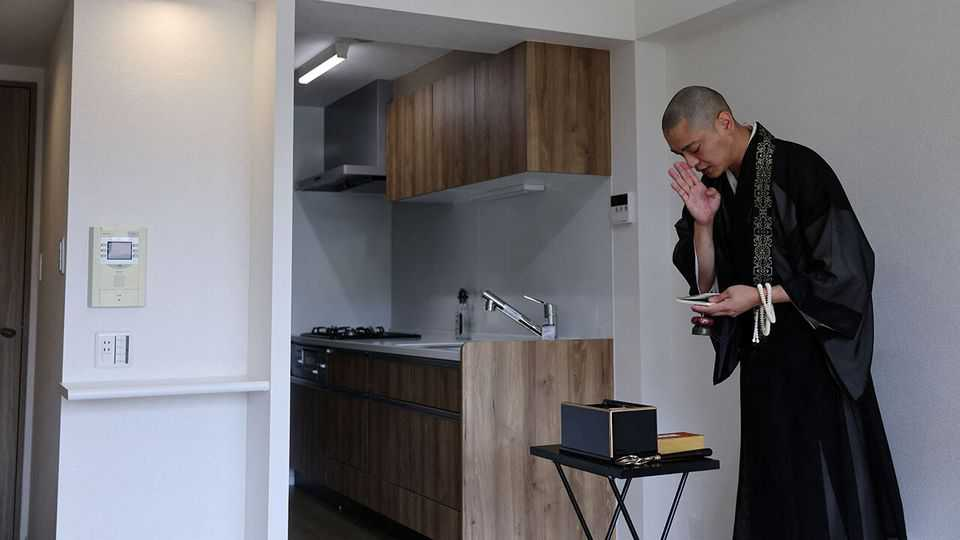
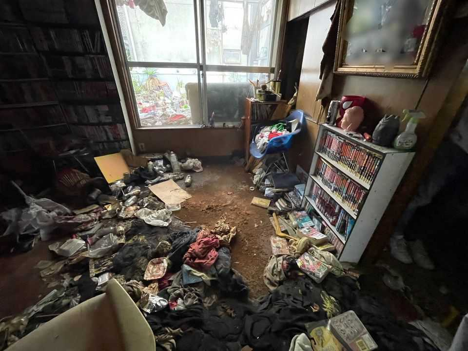

Haunted houses are in demand in Japan
What’s behind the growing desire for once-shunned “incident properties”?
July 16th 2026

For more than a decade, Matsubara Tanishi, a Japanese comedian, has lived in houses where others met gruesome ends. One tenant murdered his brother. Another hanged herself. In a third an old man died alone and lay undiscovered for two years. “I used to think I might get cursed,” he says.
In Japan such unfortunate houses are known as jiko bukken, or “incident properties”. Though many recoil at the thought of living in one, they have long fascinated the public. Mr Matsubara has built a career from inhabiting dozens of them; his memoirs have become best-sellers and inspired films. Now rising housing costs are making these properties look less unappealing to the wider public.
Incident properties are priced anywhere from 10% to 50% below market value, depending on the grisliness of the previous occupant’s demise. Such discounts of course exist elsewhere, but Japan’s culture around them is unusually elaborate. Oshima Teru, a property investor, runs a popular website mapping jiko bukken across the country, marking each with a fire icon and a description of the death. “It frightens me, but I can’t stop checking it,” says Kobayashi Yoko, a housekeeper in Tokyo. If she discovers that a client’s house is on the map, she invents an excuse not to go.
Japan is strikingly superstitious for a country where few profess a religion. A survey in 2024 showed that a third of Japanese believe in spirits. Social media teems with tales of ghosts lingering in incident properties. Some firms cater to those fears. Buddhist monks perform cleansing rituals. Kachimode, a firm in Tokyo, inspects jiko bukken with thermal cameras and other devices, purportedly searching for signs of paranormal activity. If none appear, it issues a document certifying the house as not haunted.

Demography is making such properties harder to ignore. The government recorded more than 20,000 kodokushi or “lonely deaths” in 2025, defining them as people who died alone and went unnoticed for at least eight days. In 2021 it issued a guideline saying that landlords need not disclose them, except in case of extraordinary circumstances, such as severe decomposition. The change also aimed to make it easier for older people to rent, since many landlords fear a lonely death taking place in their property.
Niki Hidenori, who runs a property firm focused on jiko bukken in Kobe, says more tenants are “weighing the price and taking a pragmatic approach”. In March average studio rents in central Tokyo rose by 13% year on year, a record high for the 22nd consecutive month. A recent survey suggests a majority of Japanese would consider living in a jiko bukken. Investors are drawn too; legally, a death need not be disclosed after three years have elapsed, so a property bought at a discount can later be sold at full price.
Mr Matsubara says he has never seen a ghost, but he has developed a habit of sleepwalking. He doubts malicious spirits are to blame, suspecting instead that years of living in such spaces have taken a psychological toll. Ryua, a young woman living in a jiko bukken in Tokyo, is at peace with it herself. But when friends visit, “they start getting nervous and leave quickly,” she says. “That’s a bit sad.” ■
For exclusive coverage of Asian politics, economics and security, sign up to Asia Bulletin, our weekly subscriber-only newsletter.